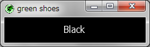

The Green Shoes Manual 1.0.337
Background
背景はスロット全体に渡って塗られた、グラデーションまたは画像の色です。 背景と枠線はShoes::Patternの種類の一つです。
背景（background）と呼ばれているにも関わらず、この要素は他の要素よりも前面に 表示されます。背景がスロットで塗られた何か他のもの（rectまたはovalのような）の 後にきた場合、背景はその要素の上に塗られます。
もっとも単純な背景は、黒の背景のようなbackgroundメソッドによって作成された、 単色の背景です。
Shoes.app do
background black
end
このような単純な背景はスロットが含むもの全体を塗りつぶします （この場合は、ウィンドウ全体が黒で塗られます。）
好きなように背景のサイズを切り詰めたりあちこち移動したりするためのスタイルを利用できます。
ウィンドウの上側を50ピクセルに渡って黒い背景で塗りつぶします：
Shoes.app do
background black, height: 50
end
または、ウィンドウの右端の50ピクセルの列を塗りつぶします：
Shoes.app do
background black, width: 50
end
背景は普通の要素と同様なので、その他のすべてのメソッドについてはElementsセクションの 始めの部分も見てください。
to_pattern() » a Shoes::Pattern
背景を塗りつぶすために利用されたグラデーションや画像を通常のShoes::Patternオブジェクトに 配置し、色をヤンクします。そして、他のオブジェクトに背景や枠線に渡すことができます。 好きなように再利用してください。
注意: Green Shoesはto_patternメソッドをサポートしていません。
Next: Border